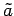

Inhalt Index DeskTop Bronstein

 Wahrscheinlichkeitsrechnung und Mathematische Statistik Mathematische Statistik Korrelation und Regression Lineare Regression bei zwei meßbaren Merkmalen
Wahrscheinlichkeitsrechnung und Mathematische Statistik Mathematische Statistik Korrelation und Regression Lineare Regression bei zwei meßbaren Merkmalen


Wenn zwischen den Merkmalen X und Y mit Hilfe des Korrelationskoeffizienten eine Abhängigkeit festgestellt wurde, dann besteht die nächste Aufgabe in der Ermittlung des funktionalen Zusammenhanges . Im einfachsten Falle der linearen Regression wird dabei vorausgesetzt, daß bei beliebigem, aber festem x-Wert die Zufallsgröße Y in der Grundgesamtheit normalverteilt ist mit dem Erwartungswert
| (16.158) |
erhält man für und  die Schätzwerte (Näherungswerte)
die Schätzwerte (Näherungswerte)
| (16.159a) |
mit
| (16.159b) |
und dem empirischen Korrelationskoeffizienten rxy gemäß (16.157b). Die Koeffizienten  und  nennt man Regressionskoeffizienten. Die Gerade heißt Regressionsgerade.
nennt man Regressionskoeffizienten. Die Gerade heißt Regressionsgerade.